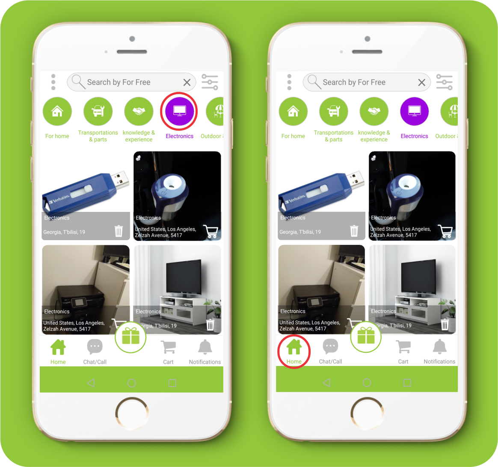
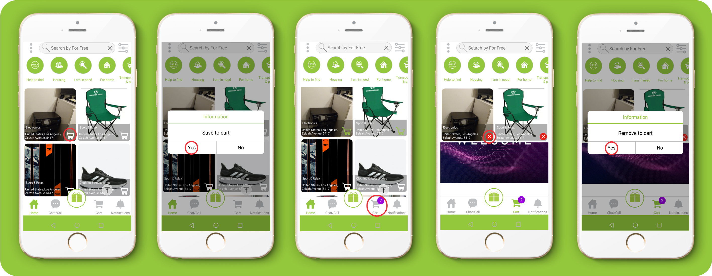

About APP
1. What is For Free and how does it work?
“For Free” is a free of charge app an web site, where you can receive or give away free items and use free messages and free calls (only in app) of the app for this purpose.
2. Is “For Free” free to use?
Yes, “For Free” is completely free.
3. Is there a mobile app?
Yes. “For Free” is a mobile app, that has Android OS and iOS support.
Download from:
For Android OS – Google Play Store >
For iOS – Apple Store >
Registration
4. When do I need to register?
You need to register in case of any action, other than browsing.
5. Can I browse without registering?
Yes. You will be able to browse with the status of “Guest”.
6. How to register?
If you make any actions in the “Guest” mode then you will go to the registration and login page.
1. Swipe the left menu.
2. Click the “Register” button.
3. Fill registration information.
4. Click the “Register” button
5. After Register please check your e-mail to confirm registration link.
7. I haven't received the verification email after signing up.
First, easy way:
1. Check your Emal to confirm activation link
2. Click the "Confirm a link"
Second way to activate your account:
1. Touch the red panel up to main page "You have not confirmed your email address. Please check your Email!"
2. Get Code from incoming mail.
3. Click the button "Enter your code"
4. Enter your code and click the "Activate" button.
If you haven't received the verification code:
1. Touch the red panel up to main page "You have not confirmed your email address. Please check your Email"
2. Click the button "Resend code" and Check your Email again.
8. How do I change language to For Free?
Method # 1 - Select the language on the sign up and log in page.
1- Swipe the left menu.
Method #2 – Select the language on the left swipeable menu.
1- In the list displayed, find the language you wish by name or find it in the grid.

User Options
9. What is my username and how do I change it?
Your “User name” is your e-mail address, by which you have signed up. Changing the “User name” is impossible.
10. How do I change my profile picture?
1. Swipe the left menu.
2. Click the “Profile” button.
3. Click the "Edit data" button.
4. Click the “Browse” button and choose the photo from your pc albums
5. After adding the photo click the “Submit” button.
11. How do I change my name?
1 - Swipe the left menu.
2 - Click the “Edit info” button
3 -Change the name and click the “OK” button for confirmation.

12. How do I change my phone number?
1. Swipe the left menu.
2. Click the “Edit info” button.
3. Change your old phone number with a new one and click the “OK” button for confirmation.

13. How do I change my email address?
You cannot change the email address, as the email address specified at the time of registration is used as your personal account identifier.
14. How do I change my location?
1. Swipe the left menu
2. Click the “Edit info” button.
3. Change your old location with a new one and click the “OK” button for confirmation.
15. How do I change my password?
1. Swipe the left menu
2. Click the “Edit info” button.
3. Change your old password with a new one and click the “OK” button for confirmation
16. How do I get back to my location if I have another address specified in the search?
Click the "Update Location" button to return your current location
Free Items and Posts
17. Where are all the posts?
All ads can be viewed on the For free website homepage.
1. In order to go to homepage click the “Home” button on the lower panel.
18. How do I refresh my homepage?
1. The homepage automatically updates every 5 minutes.
2. In order to manually update, swipe the screen from the top to the bottom in the main menu, after which an update sign will appear.
19. How do I find item by category?
1. Select a category after which will be displayed only those posts, whichever category you have chosen.
2. You will be able to return to the homepage and shared posts with the "HOME" button.

20. How do I find an item using filters?
1. Click the “filter” button.
2. Select the category in which you want to search for items.
3. Open location to search by distance.
4. Mark the place on the map, from where you wish counting the distance and click the “Set location” button.
5. Select the distance measuring unit KM/MI.
6. Set the distance radius, where the desired category items will be searched.
7. Select sorting, posting date and click the “See results” button
8. In order to rerun to the initial state of filters click on the “Reset” button and confirm

How do I select categories to get notifications?
1. Swipe to the left menu
2. Click the “Settings” button.
3. Turn "On" notifications.
4. Click on the "Select categories"
5. Select categories and click the “Save” button.
6. Click the “Yes” button.
22. How do I add/remove items to cart?
1. After selecting the item, click on the “cart” button.
2. You should answer “yes” to the notification “Save to cart”?
3. The number of saved items will be seen on the “cart” on the lower panel. You will be able to see the list by clicking on the cart.
4. Click on the “remove” button for the item saved in the cart.
5. On the displayed notification “Remove from cart?” you should answer “Yes”.

23. How do I find the item's location in the ads?
1. Click and open the item.
2. Click the map.
3. Click on the drawing pin on the map.

24. How do I reply to a post that I'm interested in?
After selecting the item you can talk to the giver by means of free chat and free calling of the app “For Free”.
25. How do I contact with the Giver?
1. Click and open the item.
2. You can write a free message.
3. You can make a free call.
26. How do I Video call?
1. Click and open the item.
2. Click the "Call" button
3. Click the "VideoCall" button
4. After sending photos you and the receiver can click on the picture and zoom in
1.Click and open the item.
2. Click the "Chat" button
3. Click the "Call" button and choose "Videocall"

27. How can i send photos in chat ?
1. Click the "Add Photo" button
2. Choose "Take Photo" or "Select From Album"
3. Click the "Send" button
4. After sending photos you and the receiver can click on the picture and zoom in
28.How can I see the item’s location and route?
For Adnroid
1. Click on the ads
2. Click the "Map" button
3. Click the items location pin on map
4. Click the "Route" or "Google maps" button
For iOS
1. Click on the ads
2. Click the "Map" button
3. Click the "Pin" button
29. . I reply to a post and nothing happens!
If you contacted the giver, it is up to the gifter to respond.
30.How and where should I arrange the pickup of an item?
Organizing of transfer or receipt of an item takes place directly between the gifter and the receiver.
31. How do items change hands - are they picked up or delivered?
The item is free and you must either take it or negotiate with each other
32. Where do replies to my posts and messages go?
Conversations can be found in the chat section.
33. How do I report?
1. Open the ad.
2. Scroll down to the bottom and click the “Report” button.
3. Click the “OK” button for confirmation.
4. Write the reason why you are reporting.
5. Click the “Report” button.
6. Check report number and click “OK”

34.What can I do if I get banned?
1. If you are banned, you should see a message, “You have been banned! Would you like to contact support?”
2. Click “Yes” and go to the support submission form.
3. Fill in the required fields and click the “Submit” button.
35.. How can i see users near me?
1. Swipe to the left menu
2. Click the "Users near you" button
3. Click the users pin on map
4. If you want to see user item`s click "YES" button
My Items and Posts
36. How do I add the item?
1. Click the “gifting” button on the Homepage.
2. Select the category where you want your item to be placed.
3. Take a photo of the item or add it from an album.
4. If desired, add photos from the camera or album.
5. Enter the name of the item in the title.
6. Select from the list the denotative of the condition of the item.
7. By clicking on the location sign, your location will be marked out or mark manually the location of the item on the screen.
8. To select the duration of the ad, if desired, click the button and set the desired date and confirm.
9. Click the “POST” button to post your ad.

37. When I try to post, the submit button doesn't do anything!
Make sure, that you have filled all the required fields in the ad.
38.. How do i find my placed items?
1. Swipe to the left menu
2. Click the “my placed items” button.

39. Can I buy, sell, trade or barter?
No. Only gifting or assistance to other users free of charge is allowed in the “For free” app.
40. Can animals and pets be posted?
Yes, you can place the animals in the appropriate section
41. How can I delete, remove or edit my posts?
1. You will not be able to correct the ad but you can delete the ads you have posted. 2. After clicking "Delete" button, agree with the "YES" button to the notification "Do you want to delete your post?"
42. How do I choose who to give my offer to?
Anyone interested in gifting your item will contact you via free chat and free calling. Only you decide to whom to give the item.
43. How do I mark my offer as a gift?
1. After giving the gift, click the gift button on the chat.
2. On the message “did you give help?” Click “yes “.
3. Rate the user with stars.
4. Write a comment and click “OK”
After give a rate the user your item or help will be taken from Home page

44. How do i find my giveaways?
1. Swipe to the left menu
2. Click the “Giveaways” button.
45. How to confirm that the help has been delivered?
1. After receiving help, click the gift button on the chat.
2. On the message, “Did you receive any help?”, click “Yes”.
46.How do I block the user?
1. Open the ad.
2. Click the “Chat” button.
3. Click the “Block” button.
4. Answer "Yes" to the displayed notification.
47. How to unblock the user?
1. Open the ad. 2. Click the “Chat” button. 3. Click the “Unblock” button. 4. Answer "Yes" to the displayed notification.
48. How do I invite people to For Free?
1. Click the menu in the upper left corner.
2. Select “Invite friends” on the displayed menu.
3. From the list displayed by your device, select the messenger, SMS, email, etc.
4. Select a contact from the list and send them a link to downloading the app “For free”.
Settings
49.. I don't see any posts?
1. Make sure you have an internet connection on your device. 2. In case of no internet connection or interruption, the application will notify you the “Connection problem”.

50. How do I find the Settings?
1. Swipe to the left menu
2. Click the “Settings” button.
51. How do I turn off notifications?
1. Swipe to the left menu
2. Click the “Settings” button.
3. Turn off Notifications.
4. Click “Yes” to save changes.
52.. What does the color of notifications mean?
The colors of the notifications:
53. How do I turn off incoming calls?
1. Swipe to the left menu
2. Click the “Settings” button.
3. Turn off incoming calls
4. Click “Yes” to save changes
54.Where can I find the info about the app?
1. Swipe to the left menu. 2. Click the “About” button.
55.If I cannot log in how do I reset account?
Reset your password or contact our Help Center.
56. If I forgot my password, what should I do?
1. Type email in the field on the Login Page, by which you are registered on the app “For free”.
2. Click on the "Forgot password" button, after which you will see the notification, that a password has been sent to your email.
57. . How do I apply for support?
1. Swipe to the left menu.
2. Select the “Support” on the displayed menu.
58. Where do i write an app review?
1. Swipe to the left menu.
2. Select the “Reviews” on the displayed menu.
3. Select the “Review us”.
4. Write the Review and click the “YES” button.
59.Where do I write my opinion?
1. Swipe to the left menu 2. Click the “Your opinion” button. 3. Write your opinion text and click “OK”.

60.How do i reset my account?
1. Swipe to the left menu and click the "Settings" button.
2. Click the “Reset your account” button and check your email to get reset code
3. Touch the red panel up to main page "You have not confirmed account reset. Please check your email.
4. Click the "Enter your code" button.
61.. How do I unsubscribe from ”For Free” ?
Remove your account.
62. How do I remove my account?
1. Swipe to the left menu.
2. Select „Settings“ on the displayed menu.
3. Click „Remove Account“ and answer “yes” to the question “Are you sure you want to remove your account?”.
4. From the list displayed, select the reason why you removed your account.
5. You will receive the “Remove Account” code on that email, by which you are registered on the app.
6. Click the "Enter your code button".
63.. How do I restore my account?
1. Click the "Log in" button.
2. Enter your email and password and click the "Confirm" button.
3. Click “yes” to the question “This account has been deactivated. Would you like to reactivate?”.
4. Touch the red panel up to main page "You have not confirmed account restore. Please check your email.
5. Click the "Enter your code" button.
6. Click the "Activate".
64. How do I activate my account if I change Device?
1. Enter your email address on the login box on the device.
2. Click the "Confirm" button
65.What should I do if I declined permissions but want to accept?
For Android
1. Go to “Settings”
2. Go to “Apps”
3. Click the “For Free” Button
4. Go to “Permissions"
5. Turn on Permissions
For iOS
1. Go to “Settings”
2. Look up “For Free” and click
3. Turn on Permissions
66.What can I do when I turn on the camera, it doesn’t turn on, and a black screen shows up?
For Android
1. Go to “Settings”
2. Go to “Apps”
3. Click the “For Free” Button
4. Go to “Permissions"
5. Turn on "Camera" Permission
For iOS
1. Go to “Settings”
2. Look up “For Free” and click
3. Turn on “Camera” Permissions
67. What can I do when I call someone, the timer is still going, but I don’t hear anything?
For Android
1. Go to “Settings”
2. Go to “Apps”
3. Click the “For Free” Button
4. Go to “Permissions"
5. Turn on "Microphone" Permission

For iOS
1. Go to “Settings”
2. Look up “For Free” and click
3. Turn on “Local Network” Permission
4. Turn on “Microphone” permission
Policies
68. What is the Fair Offer Policy?
Visit this link: Welcomeapps.net/policy/mobile.
69.. What are the rules and guidelines?
Visit this link: Welcomeapps.net/policy/mobile.
70.. How can I use my existing membership account with For Free?
Visit this link: Welcomeapps.net/policy/mobile
71. Where are the policies?
1. Swipe to the left menu.
2. Click the “Policies” button.
Statistic
72. Where are the statistics?
1. Swipe to the left menu. 2. Select the “Statistic” on the displayed menu.
73.What do statistics mean?
The number of items donated by you will be taken into account and will appear on your behalf on the statistics page in the overall ranking.
74.What does the statistics status mean?
1. Before 10 given items you will have Bronze status. 2. Before 100 given items you will have Silver status. 3. Before 1000 given items you will have Gold status. 4. Before 10 000 given items you will have Platinum status.
Translation
75. What does „correct translation” mean?
If you come across an incorrectly translated word in your language, you can help us and send us the correctly translated version.
76. How can I use the ,,Correct translation” for the app?
Swipe to the left menu 1. Click the “Language” button. 2. Click the "Correct" button 3. Choose the language 4. Edit translate and then press "Send" button
77. If you can’t find the answers to your questions above, contact us
On this link: WelcomeApps.Net/Contact/mobile.